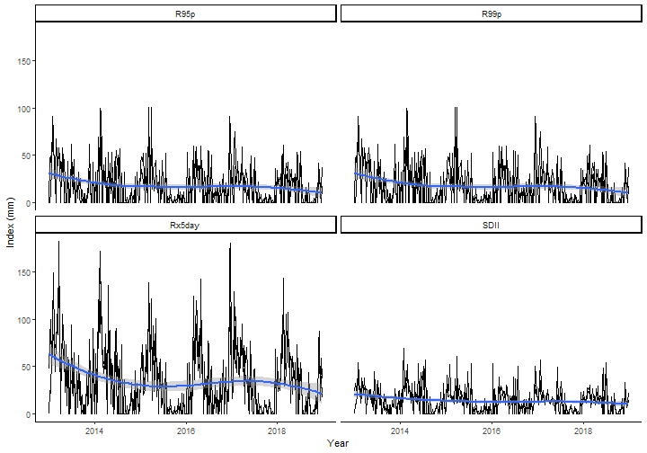
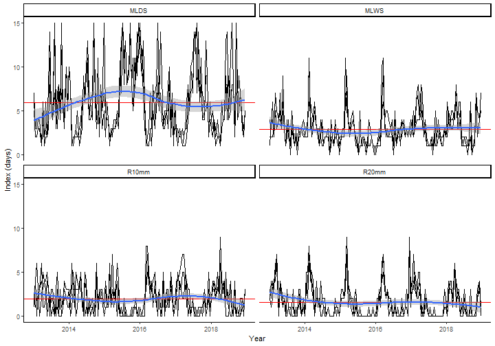

Overview.RmdThe chirps package provides functionalities for reproducible analysis using the CHIRPS data1. CHIRPS is daily precipitation data set developed by the Climate Hazards Group1 for high resolution precipitation gridded data. Spanning 50°S-50°N (and all longitudes) and ranging from 1981 to near-present, CHIRPS incorporates 0.05 arc-degree resolution satellite imagery, and in-situ station data to create gridded precipitation time series for trend analysis and seasonal drought monitoring1. Other functionalities of chirps are the computation of precipitation indices and the evaporative stress index (ESI) which describes temporal anomalies in evapotranspiration produced weekly at 0.25 arc-degree resolution for the entire globe.
The Tapajos National Forest, Brazil is a protected area in the Brazilian Amazon. We take two random points across its area to get the precipitation from Jan-2013 to Dec-2018 using get_chirps().
library("chirps")
set.seed(12)
lonlat <- data.frame(lon = runif(2, -55, -54),
lat = runif(2, -3, -2))
dates <- c("2013-01-01","2018-12-31")
dat <- get_chirps(lonlat, dates)
#> Getting your request...
#> Getting your request...
#> Getting your request...
#> Getting your request...
head(dat)
#> # A tibble: 6 x 5
#> id lon lat date chirps
#> <chr> <dbl> <dbl> <date> <dbl>
#> 1 1 -54.9 -2.06 2013-01-01 0
#> 2 1 -54.9 -2.06 2013-01-02 0
#> 3 1 -54.9 -2.06 2013-01-03 0
#> 4 1 -54.9 -2.06 2013-01-04 23.9
#> 5 1 -54.9 -2.06 2013-01-05 23.9
#> 6 1 -54.9 -2.06 2013-01-06 0The function get_chirps() returns a data.frame which inherits the class ‘chirps’, where each id represents the index for the rows in the in-putted ‘object’.
With precip_indices() is possible to track how the precipitation changes across a time series using precipitation variability indices2. Here, we take the indices for periods of 7 days and compute the indices the time series (from Jan-2013 to Dec-2018).
pi <- precip_indices(dat, timeseries = TRUE, span = 7)
head(pi)
#> # A tibble: 6 x 6
#> id date lon lat index value
#> <int> <date> <dbl> <dbl> <chr> <dbl>
#> 1 1 2013-01-01 -54.9 -2.06 MLDS 3
#> 2 1 2013-01-01 -54.9 -2.06 MLWS 2
#> 3 1 2013-01-01 -54.9 -2.06 R10mm 0
#> 4 1 2013-01-01 -54.9 -2.06 R20mm 2
#> 5 1 2013-01-01 -54.9 -2.06 Rx1day 23.9
#> 6 1 2013-01-01 -54.9 -2.06 Rx5day 47.7The function precip_indices() returns a data.frame with the precipitation indices. Each date corresponds to the first day in the time series intervals as defined by the argument ‘span’. When timeseries = FALSE the function returns a single precipitation index for the entire time series.
There are two main types of indices. Those that are expressed in days (“MLDS”, “MLWS”, “R10mm”, “R20mm”) and those that are expressed in mm (“R95p”, “R99p”, “Rx5day”, “SDII”). We split these indices to visualise the time series.
library("tidyverse")
mm <- c("R95p","R99p","Rx5day","SDII")
days <- c("MLDS","MLWS","R10mm","R20mm")
pi %>%
filter(index %in% mm) %>%
ggplot() +
geom_line(aes(x = date, y = value, group = id)) +
geom_smooth(aes(x = date, y = value), method = "loess") +
facet_wrap(. ~ index) +
theme_classic() +
labs(x = "Year", y = "Index (mm)") ->
gg1
gg1
Now plot the indices expressed in days.
pi %>%
filter(index %in% days) %>%
ggplot() +
geom_line(aes(x = date, y = value, group = id)) +
geom_smooth(aes(x = date, y = value), method = "loess") +
facet_wrap(. ~ index) +
theme_classic() +
labs(x = "Year", y = "Index (days)") ->
gg2
gg2
Here we see how these indices are changing across the time series. If used carefully and with scientific rigour, these indices are a good proxy to evaluate the climate variability using precipitation data2,3. In this quick assessment, it is possible to see that the maximum precipitation in consecutive 5-days (Rx5day) is higher in the first weeks of each year, which agree with the beginning of the rainy season in this region. However, the trend shows a decreasing in Rx5day across the years. In the other chart we note an increasing extent of consecutive dry days (MLDS) across the time series, with also a decrease in the number of consecutive rainy days (MLWS).
The chirps package also retrieves the Evaporative Stress Index (ESI) using the function get_esi() which behaves similarly as get_chirps().
set.seed(12)
lonlat <- data.frame(lon = runif(2, -55, -54),
lat = runif(2, -3, -2))
dates <- c("2016-05-01","2016-12-31")
dat <- get_esi(lonlat, dates)The function get_esi() may return NAs due to cloudiness in the dataset. Which will return an error message:
set.seed(123)
lonlat <- data.frame(lon = runif(1, -55, -54),
lat = runif(1, -3, -2.7))
dates <- c("2017-12-01","2018-01-20")
get_esi(lonlat, dates)One way to deal with this is increase the buffer area around the in-putted object with the argument dist passed to sf() methods through the ... functionality in get_esi().
Objects of class sf can also be passed directly to both get_chirps() and get_esi().
library("sf")
lonlat <- data.frame(lon = c(-55.0281,-54.9857, -55.0714),
lat = c(-2.8094, -2.8756, -3.5279))
lonlat <- st_as_sf(lonlat, coords = c("lon","lat"))
dates <- c("2017-12-15","2017-12-31")
get_chirps(lonlat, dates)To return an object with the same class (sf), the argument as.sf = TRUE is used.
1. Funk, C., Peterson, P., Landsfeld, M. & Pedreros, D. et al. The climate hazards infrared precipitation with stations—a new environmental record for monitoring extremes. Scientific Data 2, 150066 (2015).
2. Aguilar, E., Peterson, T. C., Obando, P. R. & Frutos, R. et al. Changes in precipitation and temperature extremes in Central America and northern South America, 1961–2003. Journal of Geophysical Research 110, D23107 (2005).
3. de Sousa, K., Casanoves, F., Sellare, J. & Ospina, A. et al. How climate awareness influences farmers’ adaptation decisions in Central America? Journal of Rural Studies 64, 11–19 (2018).